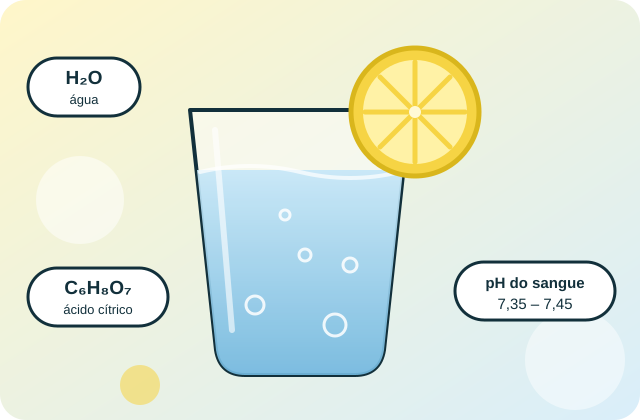
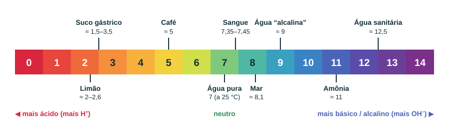

Água “alcalina”, limão e o pH do seu sangue: o que a química diz
Circula por aí a ideia de que beber água com limão ou comer certos alimentos “alcaliniza” o sangue e previne doenças. Aqui você descobre por que isso não funciona — com moléculas, ligações químicas, curiosidades e simuladores.

Em 30 segundos
O sangue se defende
O pH do sangue fica nessa faixa estreita o tempo todo. Tampões, pulmões e rins corrigem desvios em minutos ou horas — não importa o que você comeu.
O limão é ácido
O ácido cítrico dá o sabor azedo. Após o metabolismo, o citrato pode deixar a urina menos ácida, mas isso não “alcaliniza o sangue”.
O estômago neutraliza
A “água alcalina” cai num suco gástrico muito ácido e é neutralizada em instantes. O estômago volta à acidez normal.
Explore o projeto
O que é pH
A escala, o logaritmo e por que “neutro” nem sempre é 7.
💧Água “alcalina”
Eletrólise, bicarbonato e o que acontece no estômago.
🍋Água com limão
Ácido cítrico, metabolismo do citrato e cuidados com os dentes.
🩸pH do sangue
O tampão bicarbonato, pulmões, rins e a equação de Henderson–Hasselbalch.
⚛️Ligações químicas
Covalentes, iônicas e pontes de hidrogênio em H₂O, NaHCO₃ e C₆H₈O₇.
🚫Mitos e fatos
Fake news desmontadas, checklist anti-boato e um quiz.
✨Curiosidades
Do repolho roxo às hortênsias: o pH está em toda parte.
🎛️Laboratório
Simule o pH da água com limão e o tampão do sangue.
📚Fontes
Referências, créditos e como usar este projeto.
A escala de pH em uma imagem

Carregando uma curiosidade…
Este site é educativo. Ele não substitui consulta com médico ou nutricionista. Se você tem doença renal, diabetes ou usa medicamentos, converse com um profissional antes de mudar a alimentação ou adotar suplementos “alcalinizantes”.